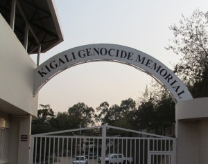
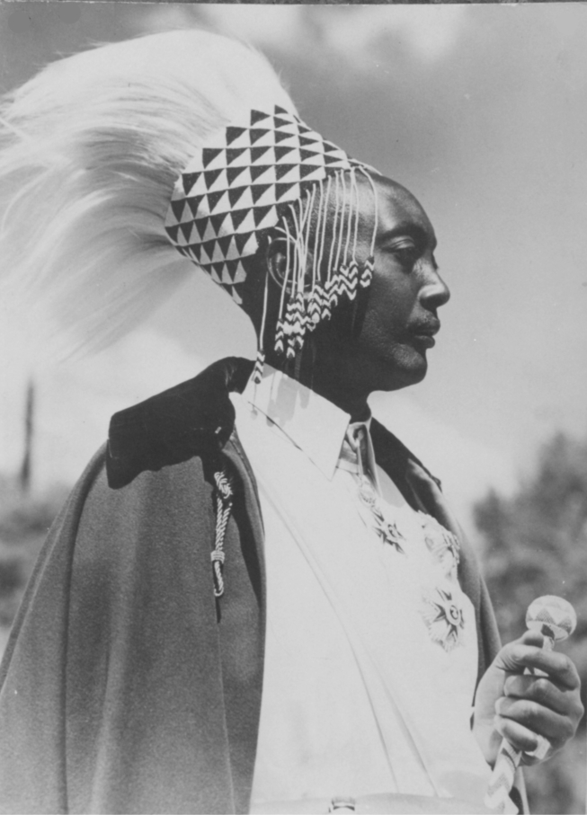
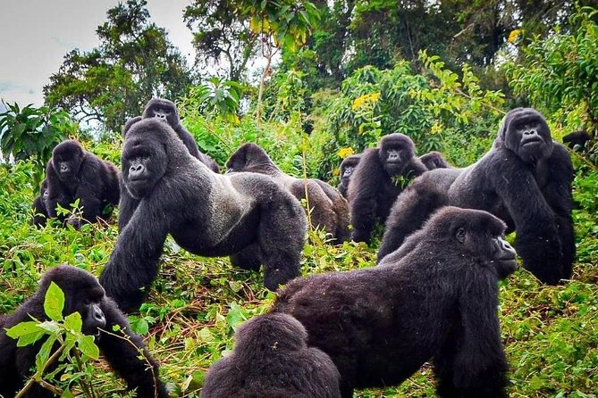
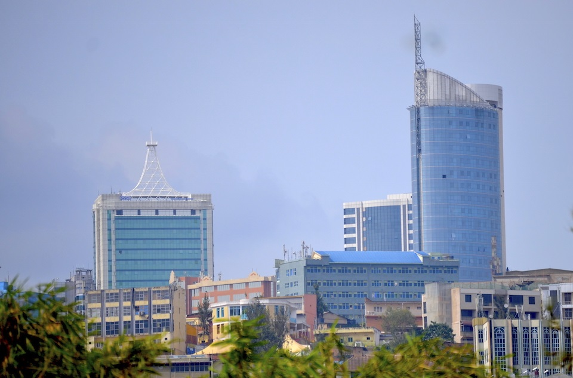
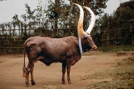
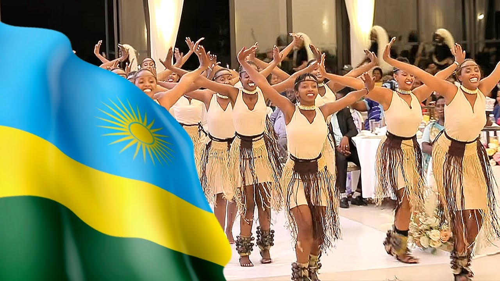

Kigali Genocide Memorial
The Kigali Genocide Memorial, located in Gisozi, Rwanda, is the final resting place for over 250,000 victims of the 1994 Genocide against the Tutsi. It was established to honor the victims, educate visitors about the causes and consequences of the genocide, and promote peace and reconciliation.
King Mutara III Rudahigwa
King Mutara III Rudahigwa (1911–1959) was the monarch of Rwanda from 1931 until his death in 1959.
Mountains Gorillas in Rwanda
Mountain gorillas are an endangered species of great ape found in the forests of the Virunga Mountains (Rwanda, Uganda, and the Democratic Republic of Congo).They live in social groups led by a dominant male called a silverback and are known for their strength, intelligence, and gentle nature.
Kigali City Skyline
The Kigali City Skyline reflects Rwanda’s rapid growth and modernization, with a mix of modern high-rise buildings, hotels, and business centers set against the backdrop of rolling green hills.Landmarks such as the Kigali Convention Centre, with its iconic dome, highlight the city’s role as a hub for business, technology, and tourism in East Africa.
Inyambo Cows
Inyambo cows are a traditional breed of long-horned cattle from Rwanda, historically associated with the Rwandan monarchy. They are known for their impressive horns and graceful appearance, often featured in royal ceremonies and cultural celebrations. Today, Inyambo cows are a symbol of Rwandan heritage, pride, and cultural identity.
Rwanda Cultural Dancers
Rwandan cultural dance is a traditional art form that reflects the country’s history, values, and community life. Dances often involve drumming, singing, and elaborate movements, with the famous Intore dance showcasing dancers in traditional attire performing graceful and energetic routines. These dances are performed during ceremonies, celebrations, and cultural events, symbolizing unity, pride, and Rwanda’s rich heritage.
Heroes's Day

Rwanda’s Heroes’ Day, observed every February 1st, honors the bravery and sacrifices of Rwandan patriots who fought for the country’s freedom and development. The day is marked by ceremonies, speeches, and cultural events to remember national heroes and inspire unity, patriotism, and civic responsibility among Rwandans.
President Paul Kagame
 Paul Kagame is the current President of Rwanda, in office since 2000.
He is credited with leading Rwanda’s recovery and development after the 1994 Genocide against the Tutsi,
promoting economic growth, national unity, and technological progress. Kagame is also a key figure in regional diplomacy
and efforts to maintain peace and stability in East Africa.
Paul Kagame is the current President of Rwanda, in office since 2000.
He is credited with leading Rwanda’s recovery and development after the 1994 Genocide against the Tutsi,
promoting economic growth, national unity, and technological progress. Kagame is also a key figure in regional diplomacy
and efforts to maintain peace and stability in East Africa.